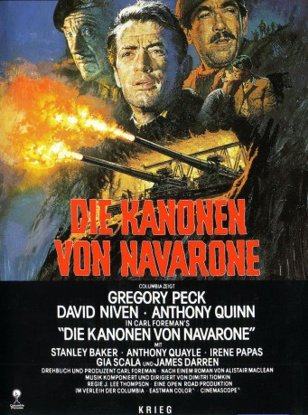

#1717 Die Kanonen von Navarone
Alternativ: The Guns of Navarone
Auszeichnungen: 1 Oscars gewonnen für 6 Oscars nominiert 2 GoldenGlobes gewonnen
 
 IMDB-Wertung: 7.6 / 10
IMDB-Wertung: 7.6 / 10  Metascore: 0
Metascore: 0 
1943: Ein sechsköpfiges Sonderkommando der Alliierten (u.a. Gregory Peck, David Niven, Anthony Quinn) wird in die Ägäis entsandt. Die Männer sollen auf einer Inselfestung stationierte deutsche Geschütze in die Luft jagen. - Packend und mit großer Starpower inszeniertes Kriegsabenteuer.
Jahr: 1961
Dauer: 158 Minuten
FSK: 16
Land: England Studio: Columbia Film-VerleihTonspuren: DD5.1 - ,
Untertitel: Deutsch,
Auflösung: 1080p (1920x816) Größe: 12288 MB
Genre: Action, Drama, Abenteuer, Krieg
Regisseur: J. Lee Thompson
Drehbuch: Alistair MacLean, Carl Foreman
Soundtrack: Dimitri Tiomkin
Darsteller:
 Gregory Peck als Mallory
Gregory Peck als Mallory David Niven als Miller
David Niven als Miller Anthony Quinn als Andrea
Anthony Quinn als Andrea- Stanley Baker als Brown
 Anthony Quayle als Franklin
Anthony Quayle als Franklin- James Darren als Pappadimos
 Irene Papas als Maria
Irene Papas als Maria James Robertson Justice als Prologue Narrated by / Jensen
James Robertson Justice als Prologue Narrated by / Jensen Richard Harris als Barnsby
Richard Harris als Barnsby Percy Herbert als Grogan
Percy Herbert als Grogan Walter Gotell als Muesel
Walter Gotell als Muesel Victor Buono als Greek Cleric at Wedding Plaza , uncredited
Victor Buono als Greek Cleric at Wedding Plaza , uncredited William Hoehne Jr. als German Officer on Navarone , uncredited
William Hoehne Jr. als German Officer on Navarone , uncredited- Gia Scala als Anna
- Bryan Forbes als Cohn
 Allan Cuthbertson als Baker
Allan Cuthbertson als Baker- Michael Trubshawe als Weaver
- George Mikell als Sessler
 Tutte Lemkow als Nicolai
Tutte Lemkow als Nicolai- Albert Lieven als Commandant
- Norman Wooland als Group Captain
- Cleo Scouloudi als Bride
- Nicholas Papakonstantinou als Patrol Boat Captain
- Christopher Rhodes als German Gunnery Officer
- Victor Beaumont als German Officer in Gun Cave , uncredited
- Jack Cooper als German Soldier on Patrol Boat , uncredited
 Carl Duering als German Radar Operator , uncredited
Carl Duering als German Radar Operator , uncredited- Wolf Frees als Radio Operator , uncredited
- Peter Grant als British Commando , uncredited
- Rosemary Nicols als (uncredited
- Robert Rietty als Mallory - German , uncredited
- Michael Sarne als Extra , uncredited
- Bob Simmons als German Soldier on Navarone , uncredited
Datei: X:\2-Dilogie(N-Z)\Navarone\Kanonen von Navarone, Die (1961, FSK16, 1920x816).mkv seit 10.08.2015
Festplatte: HD Collection-2(A-Z)-3(A-M)
 Alle Filme aus Gruppe '2-Dilogie(N-Z)\Navarone'
Alle Filme aus Gruppe '2-Dilogie(N-Z)\Navarone'